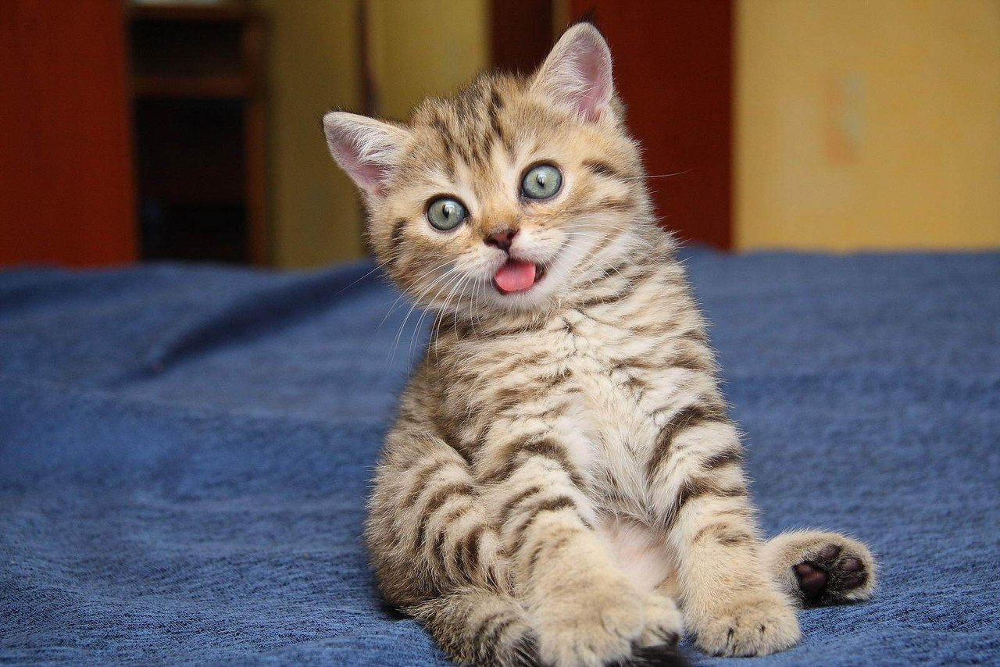

Выполняем 3 пункт домашне работы, т.е. берем картинку из инетрнета и добавляем на сайт:

Здесь мы используем первый раз параграф(абзац) (Пункт 2)
Выполняем 3 пункт домашне работы, т.е. берем картинку из инетрнета и добавляем на
сайт:
Здесь мы используем второй раз параграф(абзац) (Пункт 2)
Выполняем пункт 4 домашней работы, т.е. берем картинку локально и добавляем на сайт:
